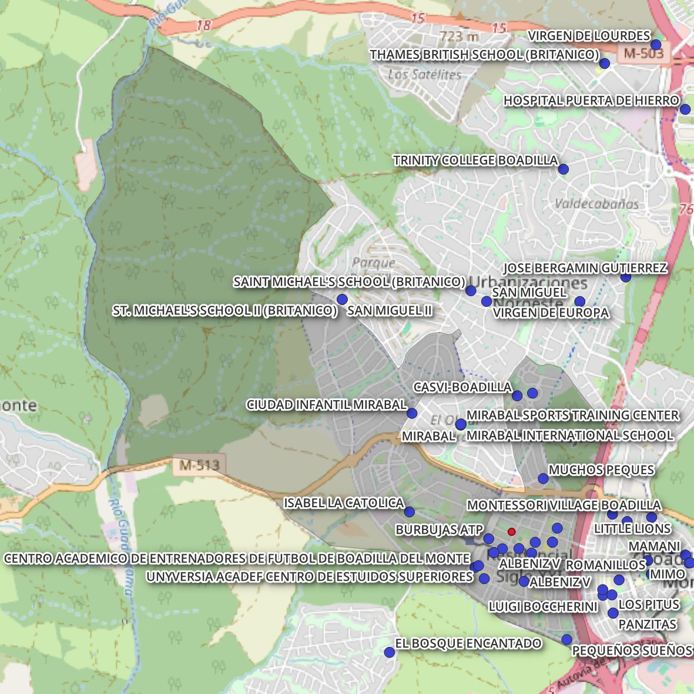

Puntos de interés en el territorio parroquial
Parroquia Santo Cristo de la Misericordia (Boadilla del Monte) · Arciprestazgo de Villaviciosa de Odón
Entidades religiosas no católicas
No hay ninguna entidad religiosa no católica en el territorio de esta parroquia.
Centros educativos

15 centros educativos en el territorio de la parroquia (privado: 7, público: 5, privado concertado: 3).
| Centro | Tipo | Titularidad | Domicilio | Web |
|---|---|---|---|---|
| AGORA | Colegio de educación infantil y primaria | Público | Calle de Gutiérrez Soto, 12, 28660 Boadilla del Monte | Página web |
| ALBENIZ V | Escuela infantil privada | Privado | Avenida del Siglo XXI, 13, 28660 Boadilla del Monte | |
| ARQUITECTO VENTURA RODRIGUEZ | Instituto de educación secundaria | Público | Calle de Severo Ochoa, 4, 28660 Boadilla del Monte | Página web |
| CASVI-BOADILLA | Centro privado de educación infantil, primaria y secundaria | Privado concertado | Calle Miguel Ángel Cantero Oliva, 13, 28660 Boadilla del Monte | Página web |
| CENTRO ACADEMICO DE ENTRENADORES DE FUTBOL DE BOADILLA DEL MONTE | Centro autorizado de enseñanzas deportivas grado medio y superior | Privado | Avenida de la Condesa de Chinchón, 21, 28660 Boadilla del Monte | |
| CESUR HELADE | Centro privado de formación profesional específica | Privado | Calle de Severo Ochoa, 6, 28660 Boadilla del Monte | |
| COLEGIO HELADE | Centro privado de educación infantil, primaria y secundaria | Privado concertado | Calle de Severo Ochoa, 6, 28660 Boadilla del Monte | Página web |
| COLEGIO QUERCUS | Centro privado de educación infantil, primaria y secundaria | Privado concertado | Calle de Valle Inclán, 12, 28660 Boadilla del Monte | Página web |
| FEDERICO GARCIA LORCA | Colegio de educación infantil y primaria | Público | Calle de Federico García Lorca, 4, 28660 Boadilla del Monte | Página web |
| ISABEL LA CATOLICA | Instituto de educación secundaria | Público | Calle de Cristóbal Colón, 12, 28660 Boadilla del Monte | Página web |
| MUCHOS PEQUES | Escuela infantil privada | Privado | Calle de Francisco Tomás y Valiente, s/n, 28260 Boadilla del Monte | Página web |
| NEMOMARLIN BOADILLA DEL MONTE | Escuela infantil privada | Privado | Avenida de Julio Fuentes, 9, 28660 Boadilla del Monte | |
| PEQUEÑOS SUEÑOS | Escuela infantil privada | Privado | Avenida de la Condesa de Chinchón, 107, 28660 Boadilla del Monte | Página web |
| TAKARA | Escuela infantil | Público | Calle de Federico García Lorca, 4, 28660 Boadilla del Monte | Página web |
| UNYVERSIA ACADEF CENTRO DE ESTUIDOS SUPERIORES | Centro privado de formación profesional específica | Privado | Avenida de la Condesa de Chinchón, 21, 28660 Boadilla del Monte |
Fuente: registro de centros educativos de la Comunidad de Madrid. Solo se recogen los centros de alta.